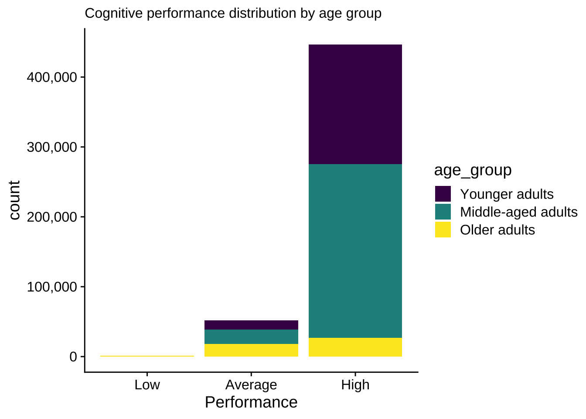
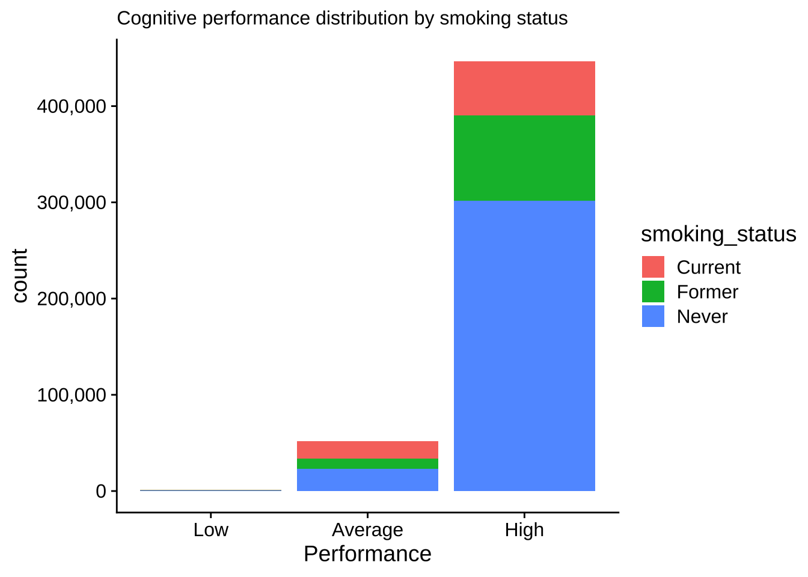
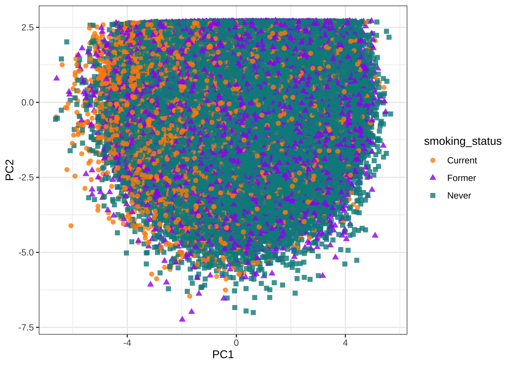
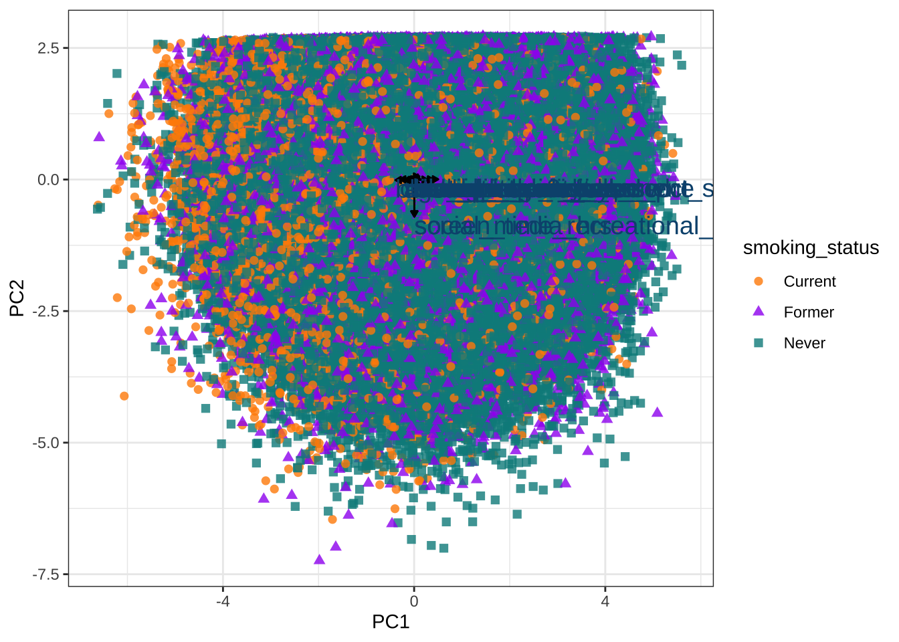
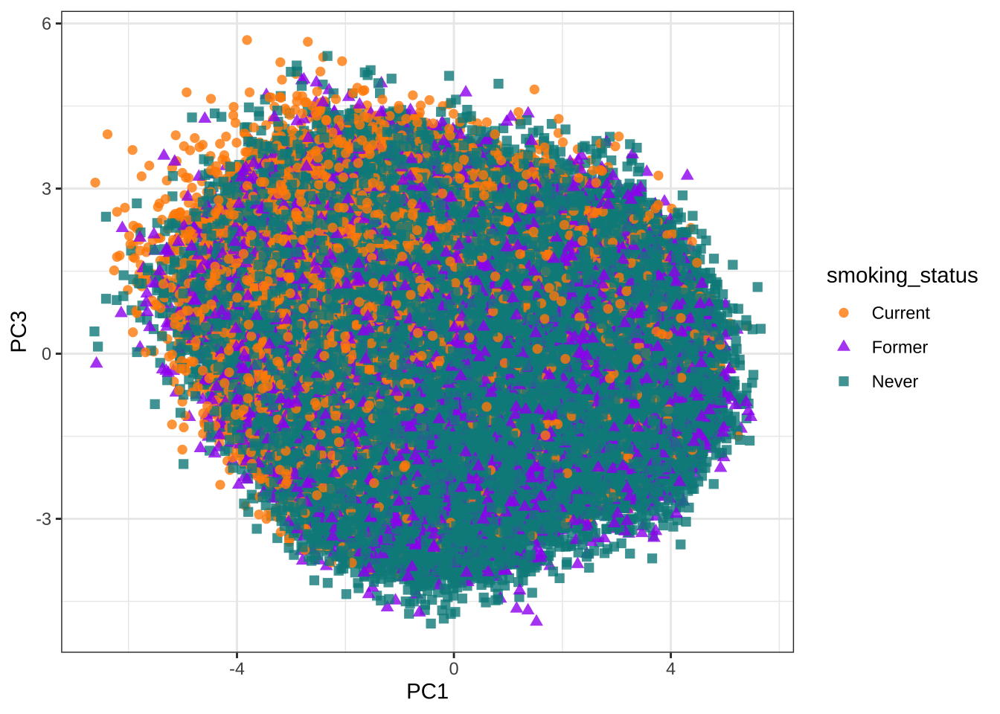
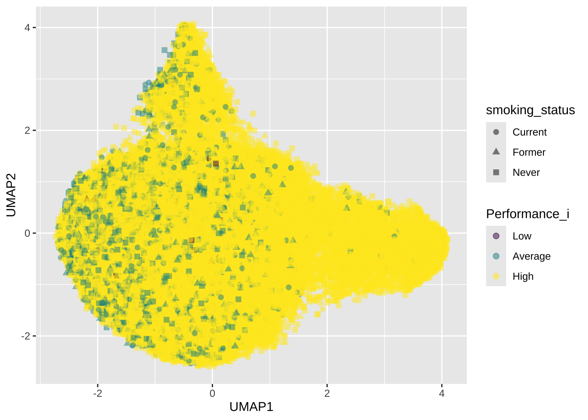
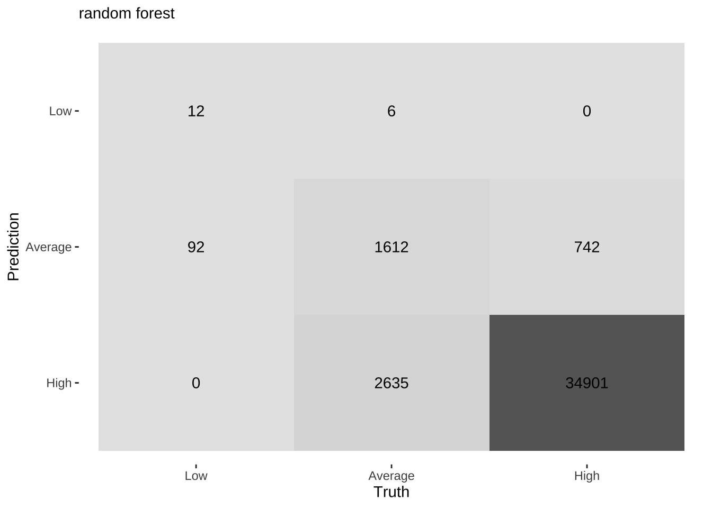
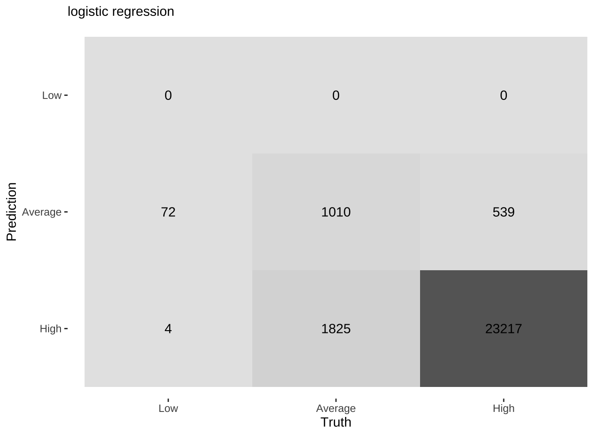

ggplot(raw, aes(x = age, y = cognitive_assessment_score, color = smoking_status)) +
geom_point()
Replace this with an introduction to your research question or project. What are you investigating? Why does it matter?
Describe how you conducted your analysis. What data did you use? What analyses did you perform?
Share your findings here. You can include:
Here’s a sample R code block:
ggplot(raw, aes(x = age, y = cognitive_assessment_score, color = smoking_status)) +
geom_point()
age_data_plot <- raw |>
mutate(age_group = factor(case_when(
age >= 18 & age < 40 ~ "Younger adults",
age >= 40 & age < 65 ~ "Middle-aged adults",
age >= 65 & age <=90 ~ "Older adults"),
levels = c("Younger adults", "Middle-aged adults", "Older adults"),
ordered = TRUE)
)
ggplot(age_data_plot, aes(x = age_group, y = cognitive_assessment_score, color = age_group)) +
geom_boxplot()

#Correlation matrix (dropped smoking status data because its categorical)
#too much data
set.seed(756)
mat <- raw |>
dplyr::select(where(is.numeric))
mat_sample <- mat |> slice_sample(n = 1000)
GGally::ggpairs(mat_sample)

#PCA
set.seed(999)
pca_recipe <- recipe(~., data = raw) |>
update_role(smoking_status, new_role = "id") |>
step_naomit(all_predictors()) |>
step_normalize(all_predictors()) |>
step_pca(all_predictors(), id = "pca")
pca_recipe── Recipe ──────────────────────────────────────────────────────────────────────── Inputs Number of variables by rolepredictor: 15
id: 1── Operations • Removing rows with NA values in: all_predictors()• Centering and scaling for: all_predictors()• PCA extraction with: all_predictors()#Prep data
pca_prep <-prep(pca_recipe, raw)
pca_prep── Recipe ──────────────────────────────────────────────────────────────────────── Inputs Number of variables by rolepredictor: 15
id: 1── Training information Training data contained 500000 data points and no incomplete rows.── Operations • Removing rows with NA values in: age sleep_duration_hrs, ... | Trained• Centering and scaling for: age sleep_duration_hrs, ... | Trained• PCA extraction with: age sleep_duration_hrs, ... | Trained#Bake data
pca_bake <- bake(pca_prep, new_data = NULL)
pca_bake# A tibble: 500,000 × 6
smoking_status PC1 PC2 PC3 PC4 PC5
<chr> <dbl> <dbl> <dbl> <dbl> <dbl>
1 Never -1.17 -0.385 1.89 1.10 0.456
2 Former 1.54 -0.843 0.0610 -0.924 0.796
3 Current -0.661 -0.000109 1.21 1.02 -0.488
4 Never -0.518 0.229 3.02 -0.111 -0.0869
5 Never 0.0399 2.67 -1.51 -0.230 -0.294
6 Former 0.192 -1.54 0.488 0.546 1.13
7 Never -1.69 -1.87 1.43 -2.91 0.560
8 Current -3.20 -0.373 2.39 0.626 0.311
9 Never 3.15 -0.956 -2.28 -0.0448 -3.11
10 Never 1.22 0.344 1.09 0.0285 -0.793
# ℹ 499,990 more rows#Evaluate PCA
pca_prep |>
tidy(id = "pca", type = "variance") |>
filter(terms == "percent variance") |>
ggplot(aes(x = component, y = value)) +
geom_col(fill = "skyblue") +
xlim(c(0, 5)) +
ylab("% of total variance") +
geom_text(aes(label = round(value, 1)), vjust = 1.5)Warning: Removed 11 rows containing missing values or values outside the scale range
(`geom_col()`).Warning: Removed 10 rows containing missing values or values outside the scale range
(`geom_text()`).
#| fig-width: 12
#| fig-height: 6
# Plot which predictors/variables are explained in each principal component
pca_prep |>
tidy(id = "pca", type = "coef") |>
ggplot(aes(abs(value), terms, fill = value > 0)) +
geom_col() +
facet_wrap(~component, scales = "free_y") +
scale_fill_manual(values = c("#b6dfe2", "#0A537D")) +
labs(
x = "Absolute value of contribution",
y = NULL, fill = "Pos Affil") 
pca_plot <- pca_bake |>
ggplot(aes(PC1, PC2)) +
geom_point(aes(color = smoking_status, shape = smoking_status),
alpha = 0.8,
size = 2) +
scale_colour_manual(values = c("darkorange","purple","cyan4")) +
theme_bw()
pca_plot
#Add the vectors for how the variables are explained by each PC
pca_wider <- pca_prep |>
tidy(id = "pca", type = "coef") |>
pivot_wider(names_from = component, id_cols = terms)
arrow_style <- arrow(length = unit(.05, "inches"), type = "closed")
pca_plot +
geom_segment(data = pca_wider,
aes(xend = PC1, yend = PC2),
x = 0,
y = 0,
arrow = arrow_style) +
geom_text(data = pca_wider,
aes(x = PC1, y = PC2, label = terms),
hjust = 0,
vjust = 1,
size = 5,
color = '#0A537D') 
pca_plot <- pca_bake |>
ggplot(aes(PC1, PC3)) +
geom_point(aes(color = smoking_status, shape = smoking_status),
alpha = 0.8,
size = 2) +
scale_colour_manual(values = c("darkorange","purple","cyan4")) +
theme_bw()
pca_plot
As we can see that PCA is not the best way to make clusters of our population. PC1 only explain 17% of the variances and we reach 50% variances explained at PC3.
What i want to say is that this dataset does not have a distinctive factor for
set.seed(666)
UMAP_raw <- raw |>
slice_sample(n= 50000)
UMAP_data <- UMAP_raw |>
mutate(Performance_i = factor(case_when(
cognitive_assessment_score >= 16 & cognitive_assessment_score < 22 ~ "Low",
cognitive_assessment_score >= 22 & cognitive_assessment_score < 26 ~ "Average",
cognitive_assessment_score >= 26 & cognitive_assessment_score <= 30 ~ "High"),
levels = c("Low", "Average", "High"),
ordered = TRUE),
)
cleaned_UMAP_data <- subset(UMAP_data, select = -cognitive_assessment_score)
UMAP_recipe <-
recipe(Performance_i ~ ., data = cleaned_UMAP_data) |>
update_role(Performance_i, smoking_status, new_role = "id") |>
step_naomit(all_predictors()) |>
step_normalize(all_predictors()) |>
step_umap(all_numeric_predictors(), num_comp = 3)
UMAP_recipe── Recipe ──────────────────────────────────────────────────────────────────────── Inputs Number of variables by rolepredictor: 14
id: 2── Operations • Removing rows with NA values in: all_predictors()• Centering and scaling for: all_predictors()• UMAP embedding for: all_numeric_predictors()#Prep data
UMAP_prep <- prep(UMAP_recipe, UMAP_data)
UMAP_prep── Recipe ──────────────────────────────────────────────────────────────────────── Inputs Number of variables by rolepredictor: 14
id: 2── Training information Training data contained 50000 data points and no incomplete rows.── Operations • Removing rows with NA values in: age sleep_duration_hrs, ... | Trained• Centering and scaling for: age sleep_duration_hrs, ... | Trained• UMAP embedding for: age sleep_duration_hrs, ... | Trained#Bake data
UMAP_bake <- bake(UMAP_prep, new_data = NULL)
UMAP_bake# A tibble: 50,000 × 5
smoking_status Performance_i UMAP1 UMAP2 UMAP3
<chr> <ord> <dbl> <dbl> <dbl>
1 Never High 1.04 0.338 -0.521
2 Never High -1.84 -1.13 0.788
3 Never High -1.29 -0.690 0.526
4 Never High -2.11 -0.519 -0.800
5 Current High -0.321 -0.377 -2.43
6 Never High -0.0636 0.961 1.44
7 Never High -1.31 1.22 0.00599
8 Never High -1.23 -0.902 -0.0988
9 Never Average -1.61 -1.08 -0.226
10 Current High -0.864 -0.576 -1.20
# ℹ 49,990 more rowsUMAP_bake |>
ggplot(aes(x = UMAP1, y = UMAP2, color = Performance_i, shape = smoking_status))+
geom_point(alpha = .5, size = 2) +
scale_color_viridis_d()
# rf & lr: Prepare the dataset
grouped_data <- raw |>
mutate(Performance_i = factor(case_when(
cognitive_assessment_score >= 16 & cognitive_assessment_score < 22 ~ "Low",
cognitive_assessment_score >= 22 & cognitive_assessment_score < 26 ~ "Average",
cognitive_assessment_score >= 26 & cognitive_assessment_score <= 30 ~ "High"),
levels = c("Low", "Average", "High"),
ordered = TRUE),
Never_smoke = case_when(
smoking_status == "Never" ~ 1,
smoking_status != "Never" ~ 0),
Former_smoke = case_when(
smoking_status == "Former" ~ 1,
smoking_status != "Former" ~ 0),
Current_smoke = case_when(
smoking_status == "Current" ~ 1,
smoking_status != "Current" ~ 0)
)
data_i <- subset(grouped_data, select = -c(smoking_status, cognitive_assessment_score)) # set a seed in order to make the analysis reproducible.
set.seed(666)
# split the data into training and testing sets. We will train the model on the training set and then test how well it worked on the testing data.
data_final <- data_i |>
slice_sample(n= 80000)
# split the data 70% for training and 30% for testing. The bulk of the data is usually used for training the models.
split_data <- initial_split(data_final, prop=1/2, strata = Performance_i)
data_training <- training(split_data)
data_testing <- testing(split_data)
# lets check it did the split correctly, if a different seed was used a the splits would be slightly different.
data_training |>
group_by(Performance_i) |>
summarise( count = n(),
percent = n()/nrow(data_training) * 100)# A tibble: 3 × 3
Performance_i count percent
<ord> <int> <dbl>
1 Low 95 0.238
2 Average 4260 10.6
3 High 35645 89.1 data_testing |>
group_by(Performance_i) |>
summarise( count = n(),
percent = n()/nrow(data_testing) * 100)# A tibble: 3 × 3
Performance_i count percent
<ord> <int> <dbl>
1 Low 104 0.26
2 Average 4253 10.6
3 High 35643 89.1 # The recipe sets up what data we are going to use and how it to be treated before doing the modeling.
memory_recipe <-
recipe( Performance_i ~ age + sleep_duration_hrs + sleep_quality_score + cardio_mins_wk + water_intake_liters + screen_time_recreational_hrs + social_media_hrs + blood_pressure_sys + diet_ultra_processed_pct + diet_omega3_freq + alcohol_drinks_wk + novel_learning_hrs_wk + social_connection_score + chronic_stress_score + Never_smoke + Former_smoke + Current_smoke, data = data_final) |>
step_naomit(all_predictors()) |>
step_normalize(all_predictors())
memory_recipe── Recipe ──────────────────────────────────────────────────────────────────────── Inputs Number of variables by roleoutcome: 1
predictor: 17── Operations • Removing rows with NA values in: all_predictors()• Centering and scaling for: all_predictors()# The prep step pulls in all the variables from the recipe based on the dataset we give it.
data_prep <- prep(memory_recipe, data_training)
data_prep── Recipe ──────────────────────────────────────────────────────────────────────── Inputs Number of variables by roleoutcome: 1
predictor: 17── Training information Training data contained 40000 data points and no incomplete rows.── Operations • Removing rows with NA values in: age sleep_duration_hrs, ... | Trained• Centering and scaling for: age sleep_duration_hrs, ... | Trained# the bake steps preforms the prep steps and in this case normalizes all the data.
data_bake <- bake(data_prep, new_data = NULL)
data_bake# A tibble: 40,000 × 18
age sleep_duration_hrs sleep_quality_score cardio_mins_wk
<dbl> <dbl> <dbl> <dbl>
1 1.32 0.00392 -0.784 0.105
2 0.634 -0.827 -0.162 -0.321
3 2.70 -0.550 1.08 0.357
4 0.0826 0.466 0.460 -0.695
5 2.08 -0.365 -2.65 -0.539
6 0.496 -1.66 -1.41 -0.756
7 -0.538 -0.827 -0.784 -0.765
8 0.634 0.00392 0.460 -0.304
9 -0.193 1.11 -0.784 -0.182
10 2.84 -1.84 0.460 0.253
# ℹ 39,990 more rows
# ℹ 14 more variables: water_intake_liters <dbl>,
# screen_time_recreational_hrs <dbl>, social_media_hrs <dbl>,
# blood_pressure_sys <dbl>, diet_ultra_processed_pct <dbl>,
# diet_omega3_freq <dbl>, alcohol_drinks_wk <dbl>,
# novel_learning_hrs_wk <dbl>, social_connection_score <dbl>,
# chronic_stress_score <dbl>, Never_smoke <dbl>, Former_smoke <dbl>, …# MODEL 1 Random Forest
rf_model <-
# specify model
rand_forest() |>
# mode as classification not continuous
set_mode("classification") |>
# engine/package that underlies the model (ranger is default)
set_engine("ranger", importance = "impurity") |>
# we only have 4 predictors so mtry can't be more than 4
set_args(mtry = 17, trees = 1000)
# Put everything together
rf_wflow <-
workflow() |>
add_recipe(memory_recipe) |>
add_model(rf_model)
# train the model
rf_fit <- fit(rf_wflow, data_training)
# Test the importance of the variables
rf_engine <- extract_fit_engine(rf_fit)
rf_importance <- rf_engine$variable.importance
rf_importance age sleep_duration_hrs
1422.17082 340.60554
sleep_quality_score cardio_mins_wk
174.53961 788.04540
water_intake_liters screen_time_recreational_hrs
298.66887 334.15293
social_media_hrs blood_pressure_sys
311.62236 345.59943
diet_ultra_processed_pct diet_omega3_freq
802.49458 145.15689
alcohol_drinks_wk novel_learning_hrs_wk
169.33532 490.25245
social_connection_score chronic_stress_score
261.53894 415.24325
Never_smoke Former_smoke
62.54611 28.74003
Current_smoke
300.74555 Importance of each variables through random forest
| Importance | Importance |
|---|---|
| age | 731.25557 |
| diet_ultra_processed_pct | 416.80262 |
| cardio_mins_wk | 401.06220 |
| novel_learning_hrs_wk | 247.79172 |
| chronic_stress_score | 207.06067 |
| sleep_duration_hrs | 179.65047 |
| screen_time_recreational_hrs | 173.99464 |
| blood_pressure_sys | 163.87161 |
| social_media_hrs | 161.56793 |
| water_intake_liters | 145.43926 |
| Current_smoke | 144.45285 |
| social_connection_score | 135.53641 |
| alcohol_drinks_wk | 87.79295 |
| sleep_quality_score | 87.28408 |
| diet_omega3_freq | 79.49748 |
| Never_smoke | 25.18725 |
| Former_smoke | 14.30315 |
# MODEL 2 Logistic Regression
lr_model <-
# specify that the model is a multinom_reg
multinom_reg() |>
# mode as classification not continuous
set_mode("classification") |>
# select the engine/package that underlies the model (nnet is default)
set_engine("nnet")
# Put everything together
lr_wflow <-
workflow() |>
add_recipe(memory_recipe) |>
add_model(lr_model)
# train the model
lr_fit <- fit(lr_wflow, data_training)# predict the species of the testing data we held back for each model
rf.predict <- predict(rf_fit, data_testing)
lr.predict <- predict(lr_fit, data_testing)
# create a table comparing the predicted species from the true species
rf.outcome <- rf.predict %>%
transmute(pred = .pred_class,
truth = data_testing$Performance)
# confusion matrix
rf.outcome |> conf_mat(pred, truth) Truth
Prediction Low Average High
Low 12 92 0
Average 6 1612 2635
High 0 742 34901conf_mat(rf.outcome, truth = truth, estimate = pred) %>%
autoplot(type = "heatmap") + labs(subtitle = "random forest")
# accuracy
rf.outcome |> accuracy(pred, truth) -> rf.acc
# specificity
rf.outcome |> spec(pred, truth) -> rf.spec
# sensitivity
rf.outcome |> sens(pred, truth) -> rf.sens
# precision
rf.outcome |> precision(pred, truth) -> rf.prec
rf.eval <- c(rf.acc$.estimate, rf.spec$.estimate, rf.sens$.estimate, rf.prec$.estimate)
names(rf.eval) <- c("accuracy", "specificity", "sensitivity", "precision")
# create a table comparing the predicted species from the true species
lr.outcome <- lr.predict %>%
transmute(pred = .pred_class,
truth = data_testing$Performance_i)
# confusion matrix
lr.outcome |> conf_mat(pred, truth) Truth
Prediction Low Average High
Low 34 60 10
Average 17 1213 3023
High 0 692 34951conf_mat(lr.outcome, truth = truth, estimate = pred) %>%
autoplot(type = "heatmap") + labs(subtitle = "logistic regression")
# accuracy
lr.outcome |> accuracy(pred, truth) -> lr.acc
# specificity
lr.outcome |> spec(pred, truth) -> lr.spec
# sensitivity
lr.outcome |> sens(pred, truth) -> lr.sens
# precision
lr.outcome |> precision(pred, truth) -> lr.prec
lr.eval = c(lr.acc$.estimate, lr.spec$.estimate, lr.sens$.estimate, lr.prec$.estimate)
names(lr.eval) <- c("accuracy", "specificity", "sensitivity", "precision")
rbind(rf.eval, lr.eval) accuracy specificity sensitivity precision
rf.eval 0.913125 0.8754124 0.7518342 0.4911979
lr.eval 0.904950 0.8583558 0.7347067 0.5309063| accuracy | specificity | sensitivity | precision | |
|---|---|---|---|---|
| rf.eval | 0.9104 | 0.8770378 | 0.7510783 | 0.4693407 |
| lr.eval | 0.9048 | 0.8686475 | 0.7324793 | 0.5021380 |
What if we group age together.
# rf & lr: Prepare the dataset
age_grouped_data <- grouped_data |>
mutate(age_group = factor(case_when(
age >= 18 & age < 40 ~ "Younger adults",
age >= 40 & age < 65 ~ "Middle-aged adults",
age >= 65 & age <=90 ~ "Older adults"),
levels = c("Younger adults", "Middle-aged adults", "Older adults"),
ordered = TRUE)
)
cleaned_data <- age_grouped_data |>
mutate(Younger_adults = case_when(
age_group == "Younger adults" ~ 1,
age_group != "Younger adults" ~ 0),
Middle_aged_adults = case_when(
age_group == "Middle_aged adults" ~ 1,
age_group != "Middle_aged adults" ~ 0),
Older_adults = case_when(
age_group == "Older adults" ~ 1,
age_group != "Older adults" ~ 0))
data_i2 <- subset(cleaned_data, select = -c(smoking_status, cognitive_assessment_score, age, age_group) )# set a seed in order to make the analysis reproducible.
set.seed(666)
# split the data into training and testing sets. We will train the model on the training set and then test how well it worked on the testing data.
data_final2 <- data_i2 |>
slice_sample(n= 80000)
# split the data 70% for training and 30% for testing. The bulk of the data is usually used for training the models.
split_data2 <- initial_split(data_final2, prop=2/3, strata = Performance_i)
data_training2 <- training(split_data2)
data_testing2 <- testing(split_data2)
# lets check it did the split correctly, if a different seed was used a the splits would be slightly different.
data_training2 |>
group_by(Performance_i) |>
summarise( count = n(),
percent = n()/nrow(data_training2) * 100)# A tibble: 3 × 3
Performance_i count percent
<ord> <int> <dbl>
1 Low 123 0.231
2 Average 5678 10.6
3 High 47532 89.1 data_testing2 |>
group_by(Performance_i) |>
summarise( count = n(),
percent = n()/nrow(data_testing2) * 100)# A tibble: 3 × 3
Performance_i count percent
<ord> <int> <dbl>
1 Low 76 0.285
2 Average 2835 10.6
3 High 23756 89.1 # The recipe sets up what data we are going to use and how it to be treated before doing the modeling.
memory_recipe2 <-
recipe( Performance_i ~ sleep_duration_hrs + sleep_quality_score + cardio_mins_wk + water_intake_liters + screen_time_recreational_hrs + social_media_hrs + blood_pressure_sys + diet_ultra_processed_pct + diet_omega3_freq + alcohol_drinks_wk + novel_learning_hrs_wk + social_connection_score + chronic_stress_score + Never_smoke + Former_smoke + Current_smoke + Younger_adults + Middle_aged_adults + Older_adults , data = data_final2) |>
step_naomit(all_predictors()) |>
step_normalize(all_predictors())
memory_recipe2── Recipe ──────────────────────────────────────────────────────────────────────── Inputs Number of variables by roleoutcome: 1
predictor: 19── Operations • Removing rows with NA values in: all_predictors()• Centering and scaling for: all_predictors()# The prep step pulls in all the variables from the recipe based on the dataset we give it.
data_prep2 <- prep(memory_recipe2, data_training2)Warning: ! The following column has zero variance so scaling cannot be used:
Middle_aged_adults.
ℹ Consider using ?step_zv (`?recipes::step_zv()`) to remove those columns
before normalizing.data_prep2── Recipe ──────────────────────────────────────────────────────────────────────── Inputs Number of variables by roleoutcome: 1
predictor: 19── Training information Training data contained 53333 data points and no incomplete rows.── Operations • Removing rows with NA values in: sleep_duration_hrs, ... | Trained• Centering and scaling for: sleep_duration_hrs, ... | Trained# the bake steps preforms the prep steps and in this case normalizes all the data.
data_bake2 <- bake(data_prep2, new_data = NULL)
data_bake2# A tibble: 53,333 × 20
sleep_duration_hrs sleep_quality_score cardio_mins_wk water_intake_liters
<dbl> <dbl> <dbl> <dbl>
1 0.00246 -0.777 0.0979 1.01
2 -0.828 -0.158 -0.326 0.174
3 -0.551 1.08 0.349 -0.825
4 0.833 -0.777 -0.577 -1.32
5 0.464 -0.777 -0.784 1.67
6 0.464 0.461 -0.698 -0.326
7 -0.182 -2.02 -0.706 1.01
8 -0.367 -2.63 -0.542 -1.49
9 -1.66 -1.40 -0.758 0.673
10 -0.459 -1.40 -0.559 -0.326
# ℹ 53,323 more rows
# ℹ 16 more variables: screen_time_recreational_hrs <dbl>,
# social_media_hrs <dbl>, blood_pressure_sys <dbl>,
# diet_ultra_processed_pct <dbl>, diet_omega3_freq <dbl>,
# alcohol_drinks_wk <dbl>, novel_learning_hrs_wk <dbl>,
# social_connection_score <dbl>, chronic_stress_score <dbl>,
# Never_smoke <dbl>, Former_smoke <dbl>, Current_smoke <dbl>, …# MODEL 2 Random Forest
rf_model2 <-
# specify model
rand_forest() |>
# mode as classification not continuous
set_mode("classification") |>
# engine/package that underlies the model (ranger is default)
set_engine("ranger", importance = "impurity") |>
# we only have 4 predictors so mtry can't be more than 4
set_args(mtry = 19, trees = 1000)
# Put everything together
rf_wflow2 <-
workflow() |>
add_recipe(memory_recipe2) |>
add_model(rf_model2)
# train the model
rf_fit2 <- fit(rf_wflow2, data_training2)Warning: ! The following column has zero variance so scaling cannot be used:
Middle_aged_adults.
ℹ Consider using ?step_zv (`?recipes::step_zv()`) to remove those columns
before normalizing.# Test the importance of the variables
rf_engine2 <- extract_fit_engine(rf_fit2)
rf_importance2 <- rf_engine2$variable.importance
rf_importance2 sleep_duration_hrs sleep_quality_score
531.37326 254.50065
cardio_mins_wk water_intake_liters
1091.74667 468.74516
screen_time_recreational_hrs social_media_hrs
522.96917 489.38760
blood_pressure_sys diet_ultra_processed_pct
606.79817 1103.18314
diet_omega3_freq alcohol_drinks_wk
229.02442 267.57443
novel_learning_hrs_wk social_connection_score
711.64417 390.71570
chronic_stress_score Never_smoke
570.41870 69.69719
Former_smoke Current_smoke
42.29299 370.01887
Younger_adults Middle_aged_adults
34.15393 0.00000
Older_adults
1043.94456 # MODEL 2 Logistic Regression
lr_model2 <-
# specify that the model is a multinom_reg
multinom_reg() |>
# mode as classification not continuous
set_mode("classification") |>
# select the engine/package that underlies the model (nnet is default)
set_engine("nnet")
# Put everything together
lr_wflow2 <-
workflow() |>
add_recipe(memory_recipe2) |>
add_model(lr_model2)
# train the model
lr_fit2 <- fit(lr_wflow2, data_training2)Warning: ! The following column has zero variance so scaling cannot be used:
Middle_aged_adults.
ℹ Consider using ?step_zv (`?recipes::step_zv()`) to remove those columns
before normalizing.# predict the species of the testing data we held back for each model
rf.predict2 <- predict(rf_fit2, data_testing2)
lr.predict2 <- predict(lr_fit2, data_testing2)
# create a table comparing the predicted species from the true species
rf.outcome2 <- rf.predict2 %>%
transmute(pred = .pred_class,
truth = data_testing2$Performance_i)
# confusion matrix
rf.outcome2 |> conf_mat(pred, truth) Truth
Prediction Low Average High
Low 0 69 7
Average 0 938 1897
High 0 554 23202conf_mat(rf.outcome2, truth = truth, estimate = pred) %>%
autoplot(type = "heatmap") + labs(subtitle = "random forest")# accuracy
rf.outcome2 |> accuracy(pred, truth) -> rf.acc
# specificity
rf.outcome2 |> spec(pred, truth) -> rf.spec
# sensitivity
rf.outcome2 |> sens(pred, truth) -> rf.sensWarning: While computing multiclass `sens()`, some levels had no true events (i.e.
`true_positive + false_negative = 0`).
Sensitivity is undefined in this case, and those levels will be removed from
the averaged result.
Note that the following number of predicted events actually occurred for each
problematic event level:
'Low': 76# precision
rf.outcome2 |> precision(pred, truth) -> rf.prec
rf.eval2 <- c(rf.acc$.estimate, rf.spec$.estimate, rf.sens$.estimate, rf.prec$.estimate)
names(rf.eval2) <- c("accuracy", "specificity", "sensitivity", "precision")
# create a table comparing the predicted species from the true species
lr.outcome2 <- lr.predict2 %>%
transmute(pred = .pred_class,
truth = data_testing2$Performance_i)
# confusion matrix
lr.outcome2 |> conf_mat(pred, truth) Truth
Prediction Low Average High
Low 0 72 4
Average 0 1010 1825
High 0 539 23217conf_mat(lr.outcome2, truth = truth, estimate = pred) %>%
autoplot(type = "heatmap") + labs(subtitle = "logistic regression")
# accuracy
lr.outcome2 |> accuracy(pred, truth) -> lr.acc
# specificity
lr.outcome2 |> spec(pred, truth) -> lr.spec
# sensitivity
lr.outcome2 |> sens(pred, truth) -> lr.sensWarning: While computing multiclass `sens()`, some levels had no true events (i.e.
`true_positive + false_negative = 0`).
Sensitivity is undefined in this case, and those levels will be removed from
the averaged result.
Note that the following number of predicted events actually occurred for each
problematic event level:
'Low': 76# precision
lr.outcome2 |> precision(pred, truth) -> lr.prec
lr.eval2 = c(lr.acc$.estimate, lr.spec$.estimate, lr.sens$.estimate, lr.prec$.estimate)
names(lr.eval2) <- c("accuracy", "specificity", "sensitivity", "precision")
rbind(rf.eval2, lr.eval2) accuracy specificity sensitivity precision
rf.eval2 0.9052387 0.8555632 0.7625292 0.4358479
lr.eval2 0.9085011 0.8639244 0.7750233 0.4445240PCA & UMAP might not be the best approach for behavioral data, especially when no distinctive features (e.g. race, region, country) are present.
Random forest has higher accuracy, specificity and sensitivity, while logistic regression has higher precision.
Higher dimensions might be necessary for the dataset to clarify the
Dataset source:
Last updated: June 2026